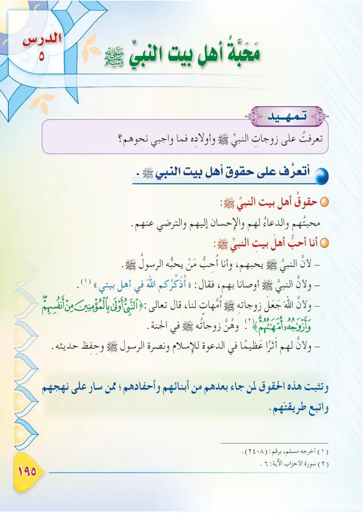

Stage 3·المرحلة الثالثة📖 Unit 6
مَحَبَّةُ أَهْلِ بَيْتِ النَّبِيِّ ﷺ Loving the Family of the Prophet ﷺ
From the Textbookp. 196

أهلُ بيتِ النبيِّ ﷺ هم أحبُّ الناسِ إليه، وقد حضَّنا النبيُّ ﷺ على محبَّتِهم وبرِّهم والاقتداءِ بهم. فلنتعرَّفْ — في هذا الدرسِ — على من هم أهلُ بيتِه، وعلى واجبِنا نحوَهم.
Ahlu bayti an-nabiyyi ﷺ hum ahabbu an-nasi ilayhi, wa qad hass-ana an-nabiyyu ﷺ 'ala mahabbatihim wa birrihim wal-'ittibaihim. Falnata'arraf — fi hadha ad-dars — 'ala man hum ahlu baytih, wa 'ala wajibina nahwahum.
The family of the Prophet ﷺ are the most beloved of people to him, and he urged us to love them, to be dutiful to them, and to follow their example. In this lesson, let us learn who they are and what our duty towards them is.
நபி ﷺ அவர்களின் குடும்பம் அவர்களுக்கு மிகவும் அன்பானவர்கள்; அவர்களை நேசிக்கவும், உதவவும், அவர்களைப் பின்பற்றவும் நபி ﷺ நமக்கு அறிவுறுத்தினார்கள். இந்தப் பாடத்தில் அவர்கள் யார், நம் கடமை என்ன என்பதை அறிவோம்.
عن زيدِ بنِ أرقمٍ رضي الله عنه قال: وقفَ النبيُّ ﷺ يومًا خطيبًا بماءٍ يُدعى «خُمًّا» بينَ مكَّةَ والمدينةِ، فحمدَ اللهَ وأثنى عليه، ثمَّ ذكَرَ أهلَ بيتِه، ثمَّ قال: «أما بعدُ، ألا أيُّها الناسُ، فإنما أنا بشرٌ يوشكُ أن يأتيَني رسولُ ربي فأُجيبُ، وأنا تاركٌ فيكم ثقلينِ: أوّلهما كتابُ اللهِ فيه الهدى والنورُ، فخُذوا بكتابِ اللهِ واستمسكوا به. وأهلُ بيتي أُذكِّرُكم اللهَ في أهلِ بيتي». أخرجه مسلم.
'An Zaydin ibni Arqama radiyallahu 'anhu qal: waqafa an-nabiyyu ﷺ yawman khatiban bi-ma'in yud'a «Khumma» bayna Makkata wal-Madinah, fahamida Allaha wa athna 'alayhi, thumma dhakara ahla baytih, thumma qal: «Amma ba'du, ala ayyuha an-nasu, fa-innama ana basharun yushku an ya'tiya Rasul? rabbi fa-ujiba, wa ana tarikun fikum thiqalayni: awwaluhuma kitabullahi fihi al-huda wan-nur, fakhudhu bi-kitabillahi wastamsiku bih. Wa ahlu bayti adhkurukumullaha fi ahli bayti». Akhrajahu Muslim.
Zayd ibn Arqam, may Allah be pleased with him, said: "The Prophet ﷺ stood up one day to address the people at a pool called Khumm between Makkah and Madinah. He praised Allah and extolled Him, then he mentioned his family, and then he said: 'O people, I am a human being; the messenger of my Lord will soon come to me and I will respond. I am leaving among you two weighty things: the first of them is the Book of Allah, in which is guidance and light — take hold of the Book of Allah and adhere to it. And my family: I remind you of Allah concerning my family.'" Narrated by Muslim.
ஜைத் இப்னு அர்கம் (ரலி) கூறினார்கள்: "மக்காவுக்கும் மதீனாவுக்கும் இடையே 'கும்' எனும் நீர்நிலை அருகில் நபி ﷺ நின்று உரை நிகழ்த்தினார்கள்; அல்லாஹ்வைப் புகழ்ந்து, தம் குடும்பத்தை நினைவுகூர்ந்து, 'மக்களே! நான் மனிதன்; என் இறைவனின் தூதர் விரைவில் வருவார்; நான் பதிலளிக்க வேண்டும். நான் உங்களிடம் இரண்டு பாரங்களை விட்டுச் செல்கிறேன்: முதலாவது அல்லாஹ்வின் வேதம் — அதில் நேர்வழியும் ஒளியும் உள்ளது; அதைப் பற்றிக்கொள்ளுங்கள். என் குடும்பம் — என் குடும்பம் குறித்து அல்லாஹ்வை உங்களுக்கு நினைவூட்டுகிறேன்' என்றார்கள்." (முஸ்லிம்)
أهلُ بيتِ النبيِّ ﷺ هم: زوجاتُه أمهاتُ المؤمنينَ، وبناتُه، وأبناءُ أبي طالبٍ: عليٌّ وعقيلٌ وجعفرٌ، وأبناءُ العباسِ، وما شابهَهُم من أقاربِه المؤمنينَ.
Ahlu bayti an-nabiyyi ﷺ hum: zawjatuhu Ummuhatu al-Mu'minin, wa banatuhu, wa abna'u Abi Talib: 'Aliyy wa 'Aqilun wa Ja'farun, wa abna'u al-'Abbas, wa ma shabahahum min aqaribihi al-mu'minin.
The family of the Prophet ﷺ are: his wives (the Mothers of the Believers), his daughters, the sons of Abu Talib: 'Ali, 'Aqil and Ja'far, and the sons of al-'Abbas, and others like them among his believing relatives.
நபி ﷺ அவர்களின் குடும்பத்தினர்: அவர்களின் மனைவியர் (முஃமின்களின் தாய்மார்), மகள்கள், அபூ தாலிபின் மகன்களான அலீ, அகீல், ஜஅஃபர், அப்பாஸின் மகன்கள் மற்றும் பிற முஃமின் உறவினர்கள்.
﴿النَّبِيُّ أَوْلَى بِالْمُؤْمِنِينَ مِنْ أَنفُسِهِمْ ۖ وَأَزْوَاجُهُ أُمَّهَاتُهُمْ﴾
An-nabiyyu awla bil-mu'minina min anfusihim, wa azwajuhu ummahatumu lahum.
The Prophet is more worthy of the believers than their own selves, and his wives are their mothers.
நபி, முஃமின்களுக்கு அவர்களின் உயிர்களைவிட உரிமை உடையவர்; அவர்களின் மனைவியர் அவர்களின் தாய்மார்கள்.
واجبُنا نحوَ أهلِ بيتِ النبيِّ ﷺ: ١- محبَّتُهم وتقديرُهم. ٢- الترضِّي عنهم والاستغفارُ لهم. ٣- احترامُهم والاقتداءُ بهم. ٤- الدعاءُ لأهلِ بيتِ النبيِّ ﷺ في الصلاةِ.
Wajibuna nahwa ahli bayti an-nabiyyi ﷺ: 1- mahabbatuhum wa taqdiruhum. 2- at-tardiyyu 'anhum wal-istighfar lahum. 3- ihtiramuhum wal-'ittibau bihim. 4- ad-du'a'u li-ahli bayti an-nabiyyi ﷺ fis-salat.
Our duty towards the family of the Prophet ﷺ:<br>1. Love them and appreciate them.<br>2. Be pleased with them and seek forgiveness for them.<br>3. Honour them and follow their example.<br>4. Pray for the family of the Prophet ﷺ in prayer.
நபி ﷺ அவர்களின் குடும்பத்தார் மீது நம் கடமை:<br>1. அவர்களை நேசிப்பது; மதிப்பது.<br>2. அவர்கள் மீது திருப்தி; அவர்களுக்காக இஸ்திஃப்ஃபார்.<br>3. கௌரவிப்பது; பின்பற்றுவது.<br>4. தொழுகையில் நபி ﷺ குடும்பத்திற்காகத் துஆ செய்வது.